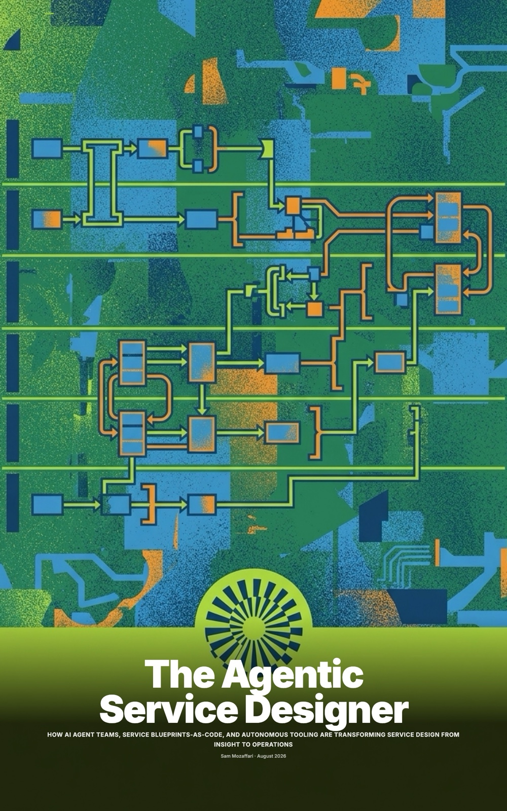

About
Sam Mozaffari
I'm interested in how a business learns from the people who experience it every day, and how that understanding changes what it does.
As an Experience Designer at KFC South Pacific, I work across team member and customer experience. My practice brings together service design, research, large-scale data analysis and applied AI. I use conversations and observation to understand an experience in context, then look across broader datasets to explore how widely a pattern appears.
I also explore how customers make decisions and respond to technology and human interaction, using that understanding to shape more intuitive, supportive service experiences.
I also build tools for research synthesis and insight exploration. AI helps me organise and interrogate evidence, while source checking and human review remain part of the work.
The purpose is to help teams make informed changes across the business. I work with stakeholders to shape improvements to enterprise systems, service standards and day-to-day operations, with a focus on making things work better for customers and team members.

- Role
- Experience Designer, KFC South Pacific
- Based
- Sydney, hybrid or remote within Australia
- Focus
- Service design, experience design, transformation consulting, applied AI
Experience
Seven years in design
- 2024 to nowExperience Designer, KFC South Pacific. Safety reporting, rostering, hiring and a new starter's first twelve weeks for team members; self-service, the drive-thru and service quality for guests.
- 2021 to 2024Product Designer, ZETR. Took the ZETR 25 power and data system from concept to production, and designed the tradesperson platform and the digital onboarding.
- 2020 to 2023UX intern, part-time, Service NSW. Worked in a team redesigning financial-assistance application forms for a state-wide government service.
- 2019 to 2021Product Designer, Black Lab Design. Designed and took to manufacture retail and commercial spaces and fixtures for Woolworths, ANZ and Wesfarmers.
- EducationUniversity of Technology Sydney, 2020 to 2023. Bachelor of Design in Product Design and Bachelor of Creative Intelligence and Innovation, a combined degree.
How I work
Research, conversations and making
Start with the decision
I work out what the team needs to decide and who will act on the findings. That helps me choose research that can answer the questions that matter.
Stay close to the people using it
I spend time with restaurant teams and trace findings back to interviews, visits and feedback. Their working day helps me understand what a proposed change would ask of them.
Make something the team can test
A blueprint, prototype or pilot makes a proposal easier to discuss and improve. When AI helps with the work, I keep its sources visible and review what it produces.
A book and some tooling
On the side

I wrote The Agentic Service Designer to work out, in detail, what service design methods look like when agents do the first draft and humans hold the gates. The public tooling behind it is in the Library. Both are personal projects built with AI assistance, and the worked example runs on a ferry operator written for the book.